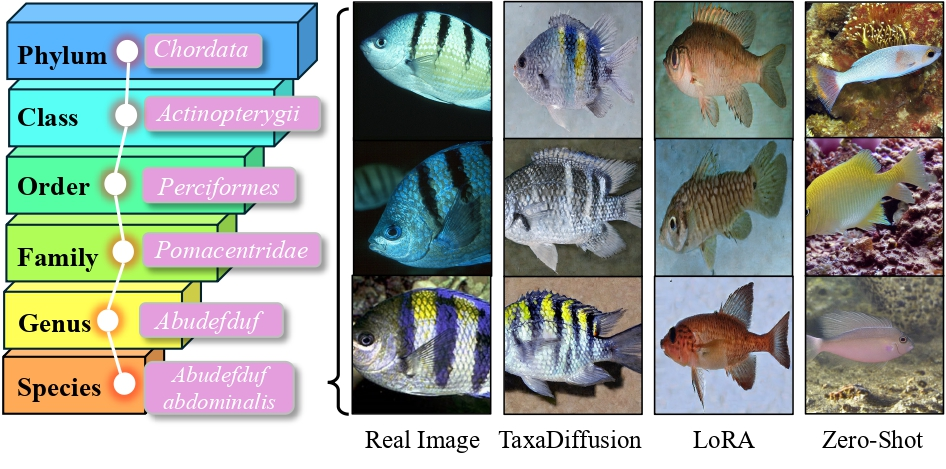
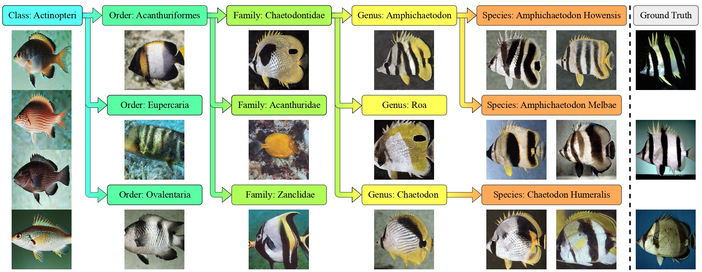
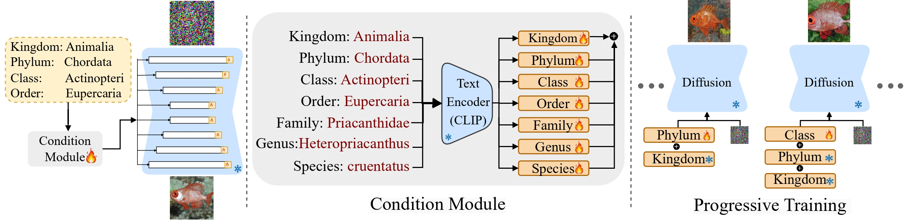
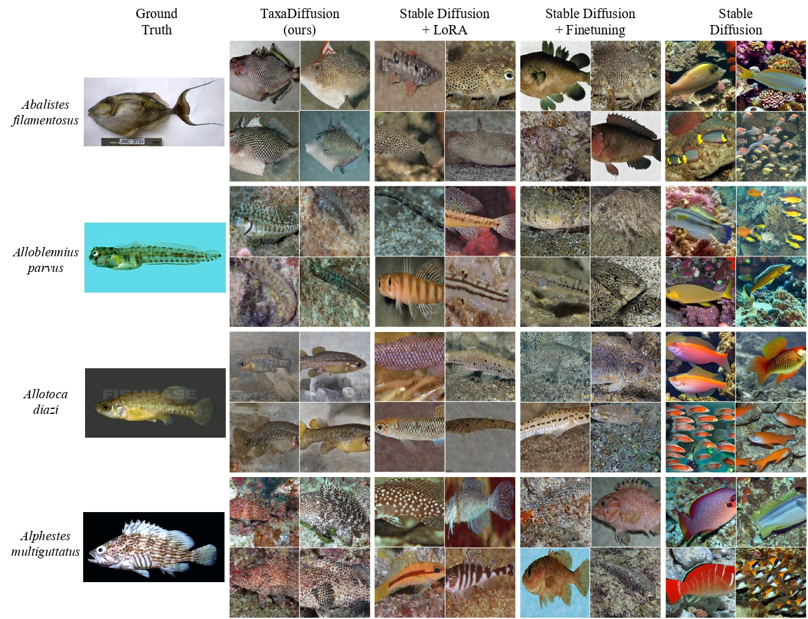
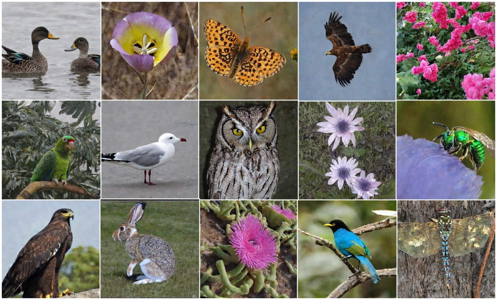
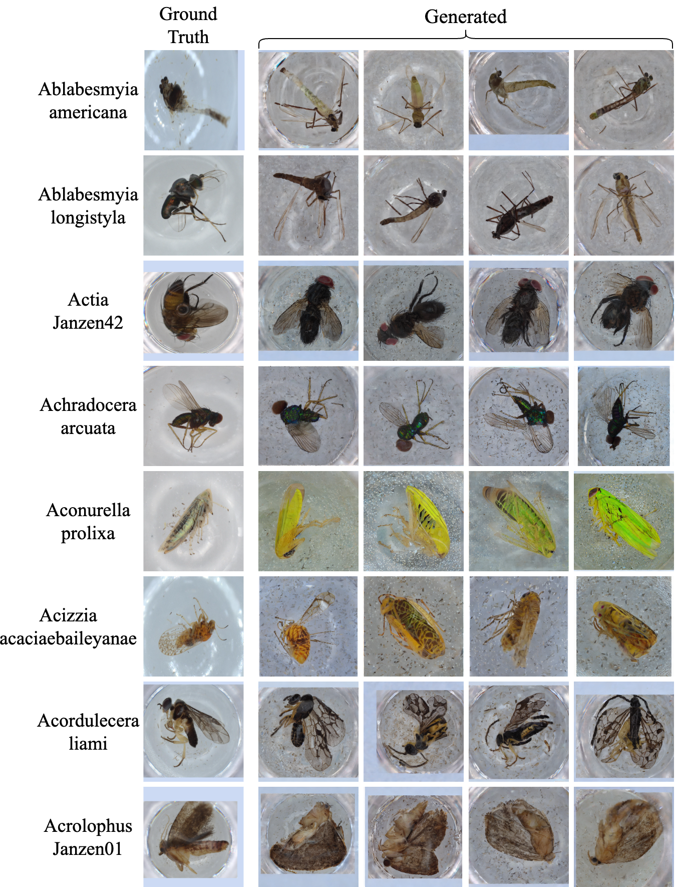
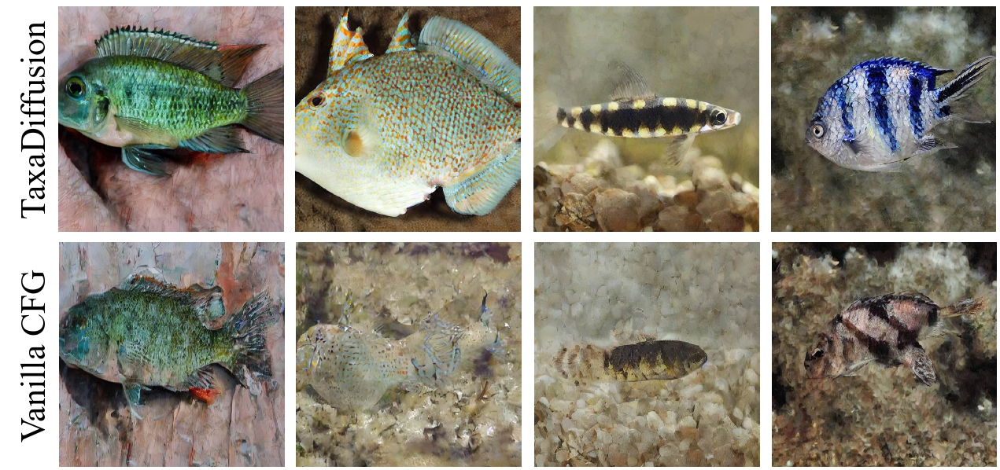
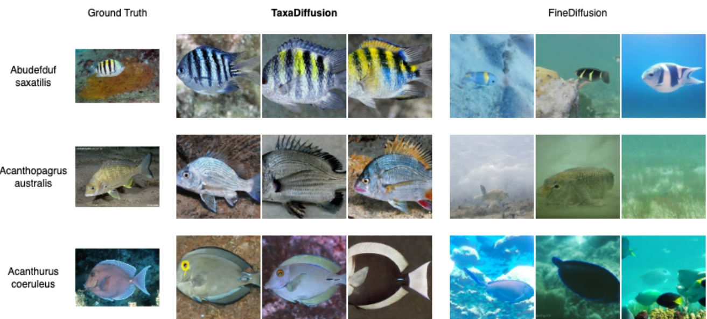

Progressively Trained Diffusion Model for Fine-Grained Species Generation
Authors:
Amin Karimi Monsefi1,
Mridul Khurana2,
Rajiv Ramnath1,
Anuj Karpatne2,
Wei-Lun Chao1,
Cheng Zhang3
1The Ohio State University, 2Virginia Tech, 3Texas A&M University
Fine-grained image generation is essential in scientific and biodiversity research but is challenged by class imbalance and visual similarities across categories. We noticed existing diffusion models often fail to distinguish subtle differences between species, especially in low-data regimes. Our approach mimics biological evolution by training diffusion models progressively through taxonomy.
Figure 1. Taxonomy encodes a rich hierarchical structure for categorizing life. We propose TaxaDiffusion to leverage such knowledge to enable fine-grained, controllable image generation. Compared to Zero-Shot generation with vanilla Stable Diffusion and LoRA fine-tuning, TaxaDiffusion achieves higher accuracy and captures fine details that align closely with real images.
This hierarchical view suggests a strategy to break down the learning task into simpler subtasks, allowing knowledge transfer from common to rare species. It motivates a progressive training approach that aligns with evolutionary semantics.
Figure 2. Generative examples of our approach on the FishNet dataset. As we progress through the taxonomy tree from Class to Order, Family, Genus, and finally Species, our model refines its understanding of distinguishing traits, generating realistic images that capture the unique visual characteristics at each level. For rare species with limited training samples, such as “Amphichaetodon Howensis” (4 samples), “Amphichaetodon Melbae” (1 sample), and “Chaetodon Humeralis” (5 samples), our taxonomy-informed, progressive training approach enables effective knowledge transfer from related species, allowing the model to generate morphologically accurate species images even with sparse data. The corresponding ground-truth images from FishNet are shown on the right.
We start from Stable Diffusion and adapt it using LoRA. We progressively freeze and expand modules tied to each taxonomy level — from Kingdom to Species. This encourages early learning of broad traits, with specialization introduced gradually. The architecture includes a CLIP-based text encoder for taxonomy and modular transformer layers that specialize across levels. Below is a high-level overview of the full training strategy.
Model Overview: TaxaDiffusion progressively integrates conditioning information from taxonomy using separate modules per level. Earlier modules encode shared traits; later ones refine species distinctions.
This dataset contains 17,000+ fish species. TaxaDiffusion excels in generating accurate species images even with fewer than 5 samples, leveraging taxonomic similarity. We outperform baseline Stable Diffusion, LoRA-tuned, and fully fine-tuned models.
Spanning 10,000 plant and animal species, this dataset highlights TaxaDiffusion’s robustness across broader biological domains. Our approach improves both FID and taxonomy alignment (BioCLIP score).
This large-scale insect dataset includes microscope images with genetic labels. TaxaDiffusion handles high intra-class similarity by capturing morphology hierarchically, outperforming other models in taxonomic coherence.
Our method, TaxaDiffusion, leverages hierarchical taxonomy levels—ranging from broad (Kingdom) to specific (Species)—to guide fine-grained image generation. Unlike conventional Classifier-Free Guidance (CFG), which uniformly combines conditional and unconditional signals, TaxaDiffusion progressively integrates hierarchical cues starting from the highest taxonomy level. This approach significantly enhances the model's ability to generate morphologically accurate and biologically relevant images. Visual comparisons demonstrate that TaxaDiffusion consistently captures detailed species-specific features more effectively than vanilla CFG, highlighting the advantage of hierarchical conditioning in generating precise, fine-grained imagery.
We compare TaxaDiffusion to FineDiffusion on species-level image synthesis. Our model achieves higher visual and semantic fidelity, particularly for rare or underrepresented classes.
If you find our work useful, please cite it using the following BibTeX:
@article{karimi2025taxadiffusion,
title={TaxaDiffusion: Progressively Trained Diffusion Model for Fine-Grained Species Generation},
author={Karimi Monsefi, Amin and Khurana, Mridul and Ramnath, Rajiv and Karpatne, Anuj and Chao, Wei-Lun and Zhang, Cheng},
journal={arXiv preprint arXiv:XXXX.XXXXX},
year={2025},
}